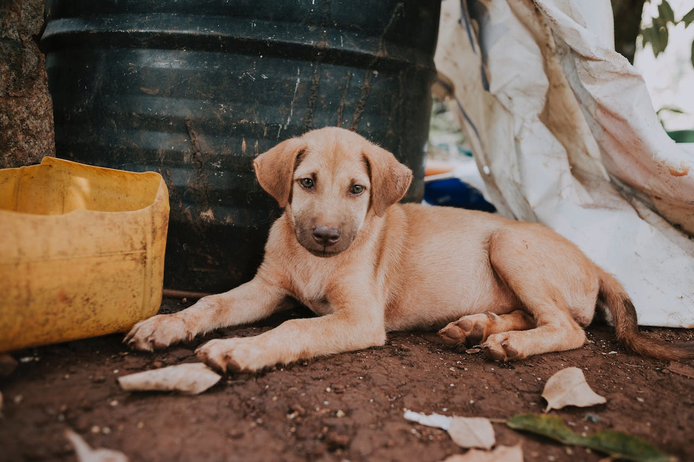
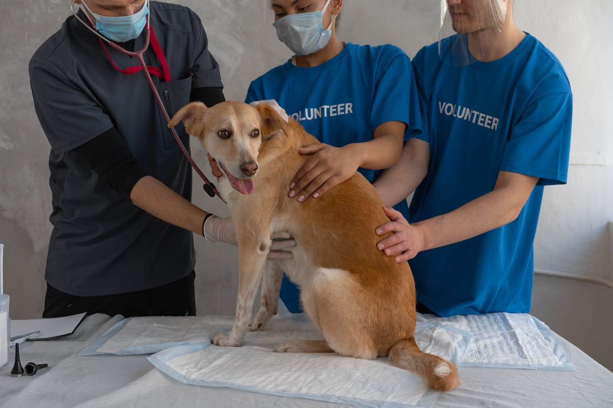

Sobre
Comprometidos a ajudar os animais de rua e abandonados
A missão do Tampet é proteger os animais abandonados, através da castração.
Quem somos
Tendo em vista a realidade dos ANIMAIS EM SITUAÇÃO DE ABANDONO que vagam pelas ruas, praças e rodovias, bem como os maus tratos por eles sofridos, o PROJETO TAMPETS acredita que é possível contribuir, através da RECICLAGEM DE TAMPINHAS PET, para o controle da superpopulação dos animais nessas condições através de castrações ou esterilizações.
Embora já existam projetos voltados à causa animal em Sorocaba e região, o fator financeiro impede que muitos tutores, abrigos ou protetores independentes recebam o benefício da castração.
Mediante essa realidade, o PROJETO TAMPETS, tem como objetivo maior COLETAR E VENDER TAMPINHAS PLÁSTICAS para criar um fundo que possibilitará a realização desse procedimento em animais sob cuidados de abrigos, protetores independentes ou tutores em condições financeiras limitadas.
A castração evita o abandono, maus tratos, fome, ninhadas indesejadas e doenças.